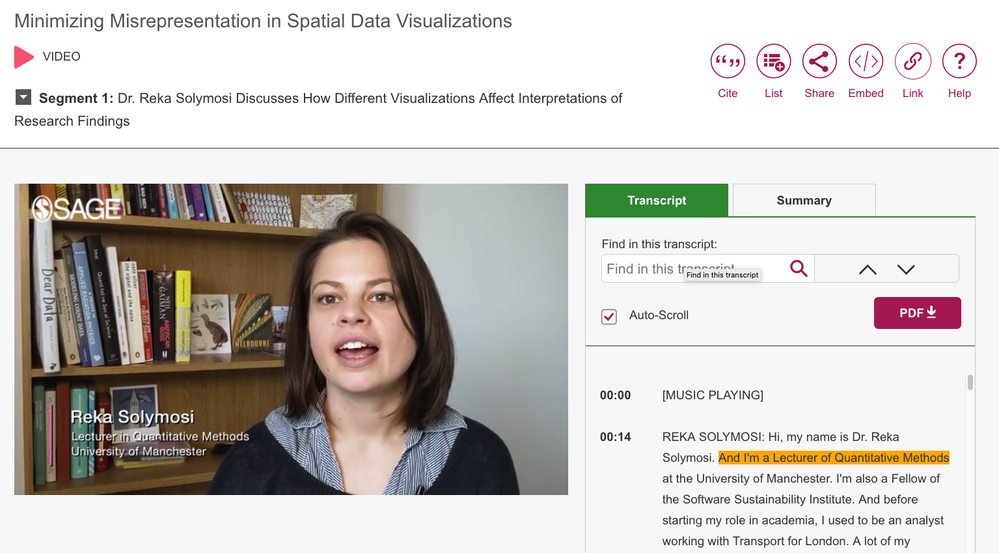
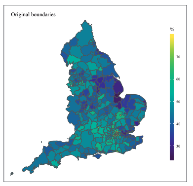
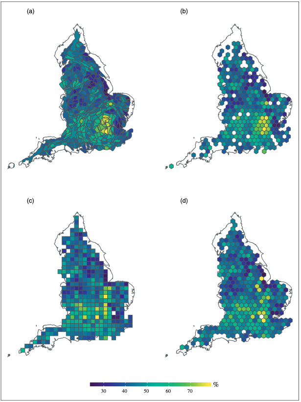

Early last autumn I was contacted by the team at Sage Research Methods about their project putting together a Data Visualisation Collection of online resources.
The idea is to create online teaching material (video tutorials, text entries, datasets, and so on) introducing fundamentals of data and design necessary to create impactful visualizations.
To contribute to this resource, I teamed up with Sage to summarise the key learnings from our paper with Dr Sam Langton, Cartograms, hexograms and regular grids: Minimising misrepresentation in spatial data visualisations in a short video clip.
This is now online and abailable here: http://methods.sagepub.com/video/srmpromo/MfaJ2O/minimizing-misrepresentation-in-spatial-data-visualizations

- Screengrab of Sage video
Transforming polygons: a summary
The premise of the paper and the video is that in some cases, the size and the shape of the polygons in our data may distract our viewers from our intended key message. For example, looking at Local Authorities across the country makes London look very small:

- Map of Local Authorities in England using Original Boundaries (note London LAs barely visible).
In these cases, we might wish to change this through transforming these polygons. Here we discuss 4 transformations: balanced area cartogram, hexogram, and uniform hexagonal and rectangular grids.
- Cartograms traditionally use a variable (e.g. population size) to distort the geography of our areas. Balanced area cartograms aim to minimise the distorting side-effects of cartograms by pre-defining an ‘interpretability threshold’ which is the smallest legible unit size given the dimensions of the final published map.
- Hexograms apply the balanced area approach, implementing an iterative binning algorithm which assigns the centroid of the polygons from the balanced cartogram to tessellated hexagons, each representing the original polygons. Doing so maintains spatial accuracy whilst also being uniform in shape and size.
- Finally, in uniform hexagonal and square tile grids the original geometry is transformed to tessellating hexagons or squares, while minimising the total distance between the centroid of every original geography and its new centroid on the grid. In our paper we implemented this using the geogrid R package using the Hungarian algorithm.
The four transformations result in these augmented maps:

- Transformed maps of Local Authority areas in England using (a) balanced cartogram, (b) hexogram, (c) square grid, (d) hexagonal grid.
After asking a sample of 600+ strangers on the internet to view these maps and either agree or disagree with the statement which we indeneded to communicate with the map overall, we were able to compare whether there were differences between the map transformations in the extent to which people agreed with the intended message.
We found that depending on which map we used, people either agreed more or less with the statement, compared with the original geographic boundaries.
The key message from this is that these transformations do indeed affect how your audiences will read your map, and the kind of transformation applied will have an effect on the extent and direction of this. Therefore we recommend trying out multiple approaches, and making sure that the chosen approach best represents the message being communicated.
The video
To watch the video summary, visit the Sage Research Methods website or go directly with the link here: http://methods.sagepub.com/video/srmpromo/MfaJ2O/minimizing-misrepresentation-in-spatial-data-visualizations.
The code
To learn more about the R code behind the transformations, see our GitHub repository: https://github.com/langtonhugh/EPB_maps or watch my talk at PyData Manchester from last July https://youtu.be/xUWDBQ4wCqU?t=3245